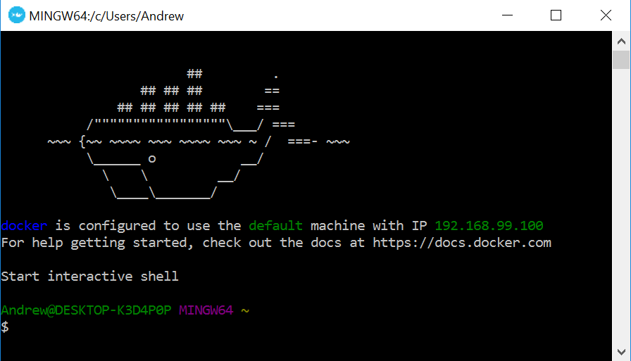
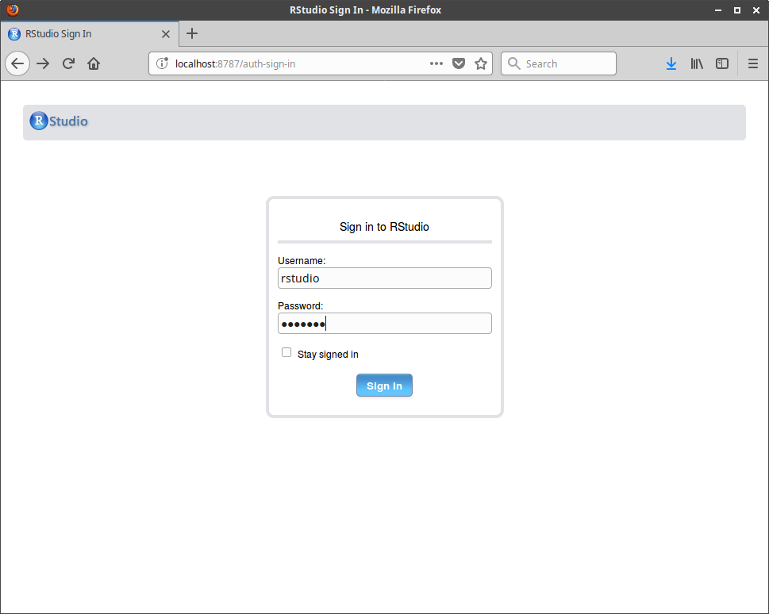
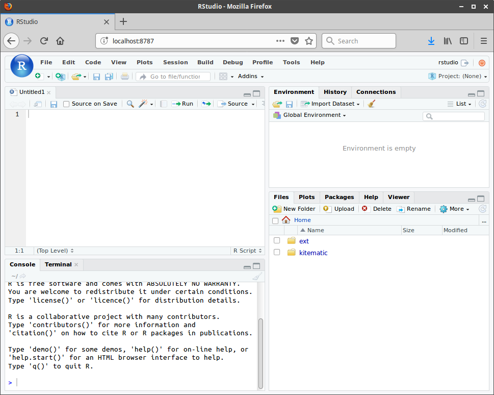

R Workshop in Kerala
1 About the Workshop
George Ostrouchov, Nagaraj Neerchal and I are giving a two-day workshop High Performance Statistical Computing using R at the International Conference on Recent Advances in Statistical Methodology with Applications in Clinical and Official Statistics (ICSA 2018), Department of Statistics, St. Thomas College, Pala, Kerala, India. An abstract and brief outline for the workshop are given here.
The workshop builds up to parallel and distributed computing in R, but begins by introducing basics of working in R. Previous experience with R and Rstudio will be helpful, but much of the material should be accessible to new R users with experience in another technical computing language such as Matlab, Python, or Julia. Applications involving statistical and machine learning methods will be presented throughout the workshop. A bachelors degree in a discipline such as statistics, computer science, or mathematics - OR equivalent work experience - should be sufficient to understand the methodology.
Attendees are encouraged to bring their laptops. Many example codes will be provided, and there will be opportunities at some points during the workshop for users to follow along. If you will be bringing your laptop, the remainder of this page discusses how to prepare it for the workshop.
It is possible to manually install R, Rstudio, and all packages that will be used in the workshop. But this is quite impractical, especially for the material on parallel and distributed programming which varies somewhat based on the computing platform (Windows, Mac, Linux). Therefore, we highly suggest a second option…
Instead, we have prepared a Docker container, which is like a virtual machine. This will provide all attendees with the same programming environment which contains all the software needed for the workshop.
Instructions to obtain and run the Docker container are given below. For attendees who cannot install Docker, alternative instructions are provided further below.
Workshop contents such as slides, programs, and dataset will be provided at the start of the workshop.
2 Installing Docker
Follow instructions to install Docker based on your computing platform (Windows, Mac, or Linux). Look for the Community Edition, for which there is no cost to use. Also, we recommend the Stable release rather than the Edge release. Here are some brief notes specific to platform.
2.1 Windows
Note that Windows users who do not have Windows 10 Pro or Enterprise - which will probably be most of us - will need a version of Docker called Docker Toolbox. Once it is installed, open the Docker Quickstart Terminal to issue commands, which should appear as follows.

Take note of the IP address listed in the output; we will use it later when connecting to Rstudio.
I initially had some trouble installing Docker Toolbox on Windows 10 Home. I believe it was due to low disk space - I suggest having at least a 5-10 GB available before installing. For me, a solution was to remove Docker Toolbox, and the Oracle VirtualBox program installed with it, remove the .docker and .virtualbox subdirectories in C:\Users\Andrew, and rerun the Docker Toolbox installer. It may also be helpful to temporarily turn off Windows Firewall, or your antivirus program’s firewall if you have one, during the installation.
2.2 Linux
Linux users should follow the installation instructions specific to their Linux distribution (Ubuntu, CentOS, etc). Once it is installed, Docker can be controlled through the system terminal.
Note that Docker commands on Linux need administrator-level access, and must be prefixed with sudo. Because we anticipate mostly Windows users in attendance, the sudo has been left out of the commands shown on the remainder of this page.
2.3 Mac
Mac users should follow their set of installation instructions. As with Linux, once Docker is installed on a Mac, it can be controlled through the Terminal application. sudo is also needed for Mac when executing Docker commands.
2.4 A Quick Test of your Docker Setup
In your terminal, issue the following command.
$ docker run hello-worldHere, $ represents the prompt, which is not part of the command. If your Docker setup is working, you should get the following result.
$ docker run hello-world
Hello from Docker!
This message shows that your installation appears to be working correctly.
To generate this message, Docker took the following steps:
1. The Docker client contacted the Docker daemon.
2. The Docker daemon pulled the "hello-world" image from the Docker Hub.
(amd64)
3. The Docker daemon created a new container from that image which runs the
executable that produces the output you are currently reading.
4. The Docker daemon streamed that output to the Docker client, which sent it
to your terminal.
To try something more ambitious, you can run an Ubuntu container with:
$ docker run -it ubuntu bash
Share images, automate workflows, and more with a free Docker ID:
https://cloud.docker.com/
For more examples and ideas, visit:
https://docs.docker.com/engine/userguide/3 Downloading Workshop Config Files
Download the workshop’s Dockerfile and accompanying start.sh. Save the files to a folder where you will keep workshop materials. Let us call this directory /path/to/workshop.
In Windows, my web browser renamed Dockerfile to Dockerfile.txt when it was downloaded. If this happens, rename the file and remove the .txt extension.
After downloading start.sh, Linux and Mac users may need to modify its permissions before the Docker container will run. Ensure that the script can be executed via the following command.
$ chmod +x start.sh4 Preparing and Running the Workshop Container
The following “build” command downloads and builds all of the prerequisites used in the container. It may take a while to run, especially on a slower network or a slower computer. For me it typically takes 20 or 30 minutes (roughly).
$ docker build -t rworkshop /path/to/workshopThe build command does not need to be run again unless the Dockerfile is changed, or unless your deployment changes. If the build was successful, the last few lines of output should be something like the following.
Successfully built f5055a2787e5
Successfully tagged rworkshop:latestThe container can now be run using the following “run” command (which is proceeded by defining two environment variables for our convenience).
$ export XSOCK=/tmp/.X11-unix/X0
$ export EXT=/path/to/workshop
$ docker run -v $XSOCK:$XSOCK -v $EXT:/home/rstudio/ext \
-p 8787:8787 -i -t rworkshopNote that: * The option -v $XSOCK:$XSOCK allows the container to display graphics. This is useful for packages such as Rcmdr. * The option -v $EXT:/home/rstudio/ext makes the directory $EXT on your computer available inside the container as /home/rstudio/ext. This will allow you to load files from your local machine into the container, and to save work from the container back to your local machine. * The option -p 8787:8787 exposes port 8787 from the container on your computer. This is needed to use Rstudio in the container. * The flags -i and -t are specified because the container is interactive. * The \ character is used to break up a long command into multiple lines.
5 Using R in the Container
Once the container is successfully started, you will encounter a Linux command prompt like the following.
rstudio@a8f9a900c791:~$5.1 R on the Command Line
To start R on the command line, issue the R command.
rstudio@a8f9a900c791:~$ R
> cat("Hello world\n")
Hello world5.2 Rstudio
To connect to Rstudio server, open a web browser on your laptop.
Mac and Linux users should navigate to the URL http://localhost:8787.
Windows users should recall the IP address they noted back in section 2.1. Suppose your assigned IP was
192.168.99.100(which is the one I have in the screenshot); navigate to the URL http://192.168.99.100:8787. If you forgot the IP address, start up another Docker Terminal and run the following.
$ docker-machine lsA login prompt should appear in your browser. Enter rstudio as both the username and the password.

Now you should be ready to use Rstudio in your web browser.

5.3 R Commander
To launch the R Commander GUI, first start R via the command line or Rstudio. Then issue the following command.
> library(Rcmdr)5.4 Running MPI Jobs
To demonstrate running an MPI job, let us use a simple Hello World example. Open a text editor on your laptop and save the following code to the file /path/to/workshop/hello.R
library(pbdMPI, quiet = TRUE)
msg <- sprintf("Hello world from process %d\n", comm.rank(), comm.size())
comm.cat("Say hello:\n", quiet = TRUE)
comm.cat(msg, all.rank = TRUE)
finalize()Recall that this file will be accessible inside the container via the path /home/rstudio/ext/hello.R. Inside the container, you should be able to run the script in parallel via the mpirun command.
rstudio@a8f9a900c791:~$ mpirun -np 4 Rscript ~/ext/hello.R
Say hello:
COMM.RANK = 0
Hello world from process 0
COMM.RANK = 1
COMM.RANK = 2
Hello world from process 1
Hello world from process 2
COMM.RANK = 3
Hello world from process 3Outputs from the container should be saved to /home/rstudio/ext. This will allow you to view images, PDFs, etc using the tools already installed on your laptop.
If you made it this far, congratulations - your laptop is ready!
6 More on Docker
For a list of Docker commands, see https://docs.docker.com/engine/reference/commandline/docker. Here we will mention a few specific ones. If you would like a video tutorial, there appear to be several good ones on YouTube such as this one.
List active Docker containers.
$ [araim@araim-inspiron docker]$ docker ps
CONTAINER ID IMAGE COMMAND CREATED STATUS PORTS NAMES
f117630f47b8 rworkshop "/etc/start.sh" 8 seconds ago Up 7 seconds 0.0.0.0:8787->8787/tcp hopeful_elionNormally, our rworkshop container will stop running when you log out of its shell. In case something went wrong with the container listed above and we wanted to kill it, we could use the following command from another terminal window.
$ docker kill f117630f47b8
f117630f47b8List Docker images that have been deployed onto your machine.
$ docker images
REPOSITORY TAG IMAGE ID CREATED SIZE
rworkshop latest d658ef03dc24 13 hours ago 1.98GB
rocker/rstudio 3.4.3 f206114fe549 3 weeks ago 1.08GB
hello-world latest 1815c82652c0 6 months ago 1.84kBThe rworkshop and rocker/rstudio images are rather large, so you may need to remove them after the workshop. Here we will remove the hello-world image, for demonstration purposes.
$ docker image rm 1815c82652c0
Untagged: hello-world:latest
Untagged: hello-world@sha256:f3b3b28a45160805bb16542c9531888519430e9e6d6ffc09d72261b0d26ff74f
Deleted: sha256:1815c82652c03bfd8644afda26fb184f2ed891d921b20a0703b46768f9755c57
Deleted: sha256:45761469c965421a92a69cc50e92c01e0cfa94fe026cdd1233445ea00e96289a7 If You Cannot Install Docker
Installing and running Docker requires administrator-level access to your computer. For example, if using a laptop issued by your employer, you may not have administrator access but may have R and Rstudio already installed. For the benefit of these attendees, we will list individual components that we have used in preparing the workshop.
The major disadvantage of installing the components individually is that you may not be able to run some of the parallel and distributed computing examples. For example, the mclapply function depends on forking, and therefore cannot be used directly in Windows. Also, our distributed computing examples rely on MPI, but we (the presenters) do not have experience installing and configuring MPI libraries in Windows.
Check the version numbers of components which you may have already installed - especially R, Rstudio, and any R packages. Some parts of the workshop may not be accessible with older versions.
7.1 Install R
Install R from CRAN. Windows users should navigate to “Download R for Windows” at the top of the page. We are using version 3.4.3.
7.2 Install Rstudio
Install Rstudio. Click Products => RStudio on the top menu, and look for a button labeled Download Rstudio Desktop. Select RStudio Desktop Open Source License among the available versions. We are using version 1.1.383.
7.3 Install the Rcpp package
See https://support.rstudio.com/hc/en-us/articles/200486498-Package-Development-Prerequisites for instructions to install the prerequisites (compilers, important libraries, etc). Once the prerequisites are installed, simply install Rcpp as you would any other package.
To test your Rcpp environment, try the following in RStudio. 1. Select File => New File => C++ File from the main menu. This will create a simple Rcpp program.
2. Save the program, say, as example.cpp.
3. Click the Source button, which is located in the upper-right corner of the panel with the example.cpp source code. This should produce the following output.
> timesTwo(42)
[1] 847.4 Install MPI
There are several MPI implementations available, such as OpenMPI and MVAPICH2. The instructions will vary based on your choice of implementation, as well as your hardware and operating system. You are on your own here; good luck! If your installation is successful, you should be able to run the following minimal example.
First, create a new file called hello_mpi.c with the following contents.
#include <stdio.h>
#include <mpi.h>
int main (int argc, char *argv[])
{
int id, np;
char processor_name[MPI_MAX_PROCESSOR_NAME];
int processor_name_len;
MPI_Init(&argc, &argv);
MPI_Comm_size(MPI_COMM_WORLD, &np);
MPI_Comm_rank(MPI_COMM_WORLD, &id);
MPI_Get_processor_name(processor_name, &processor_name_len);
printf("Hello world from process %03d out of %03d, processor name %s\n",
id, np, processor_name);
MPI_Finalize();
return 0;
}Now compile and run the program with MPI.
$ mpicc hello-mpi.c -o hello-mpi
$ mpirun -np 4 hello-mpi
Hello world from process 000 out of 004, processor name localhost
Hello world from process 001 out of 004, processor name localhost
Hello world from process 002 out of 004, processor name localhost
Hello world from process 003 out of 004, processor name localhostDepending on your platform and choice of MPI implementation, your commands may be different. The string localhost in the output will be replaced with your machine’s hostname.
7.5 Install R Packages
Download the script install.R and run it in R to obtain packages which will be used in the workshop. Suppose we have placed it into the directory /path/to/workshop. Run the following command in R.
> source("/path/to/workshop/install.R")To make sure your package versions are up to date, open Rstudio and click Tools => Check for Package Updates on the main menu.